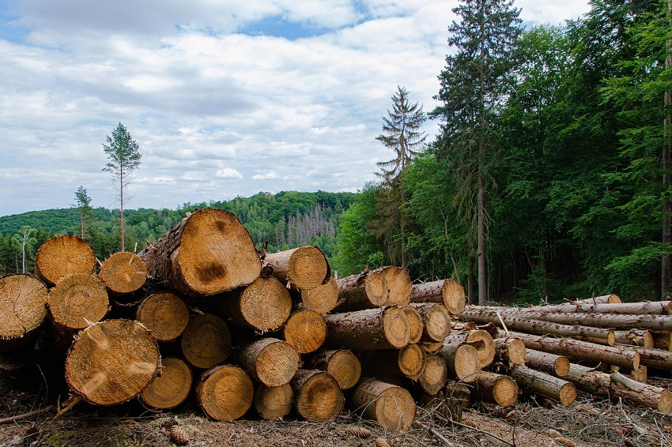

Concepto y Causas de la deforestacion industrial
La deforestación industrial es la tala que se realiza para utilizar la madera como materia prima. La madera se utiliza en todo tipo de productos, desde la construcción de casas y muebles hasta la producción de papel.
Causas y medidas
En la siguiente tabla se muestran las causas y clasificaciones de la deforestacion:
| Causas | Clasificacion de la deforestacion de bosques |
|---|---|
| Para obtener materiales de construcción. | El primer grupo es el de los bosques prohibidos, que juegan un importante papel ecológico y son reservas naturales. |
| Para procesar las materias primas para producir papel, muebles, etc. | El segundo grupo incluye los bosques de explotación limitada situados en zonas densamente pobladas y su regeneración oportuna se vigila estrictamente. |
| Para conseguir de la madera y las hojas elementos de coníferas utilizados en la industria médica o en la producción química. | El tercer grupo son los llamados bosques explotables. Se cortan completamente y luego se vuelven a sembrar. |